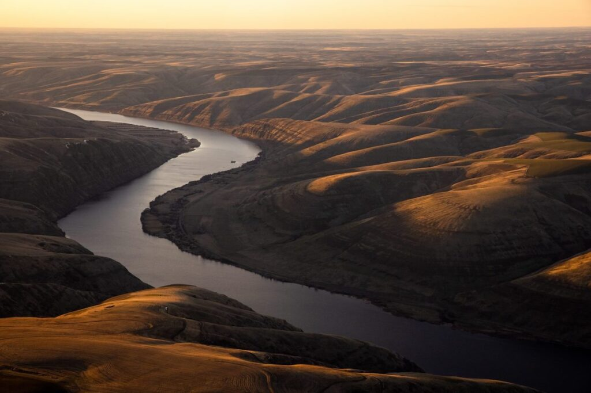
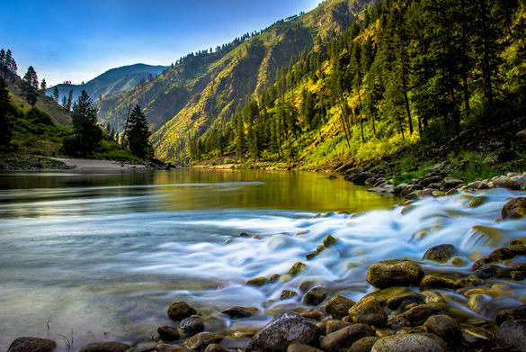

Explore Our Rivers
Experience the best rafting adventures on these thrilling rivers.
Colorado River

The Colorado River offers breathtaking canyons and exhilarating rapids. Ideal for intermediate to advanced rafters.
Experience Level: Intermediate - Advanced
Snake River
Perfect for beginners and families, the Snake River provides gentle flows with a few exciting rapids.
Experience Level: Beginner - Intermediate
Salmon River
Known as the "River of No Return," the Salmon River offers an unforgettable wilderness adventure.
Experience Level: Intermediate - Expert